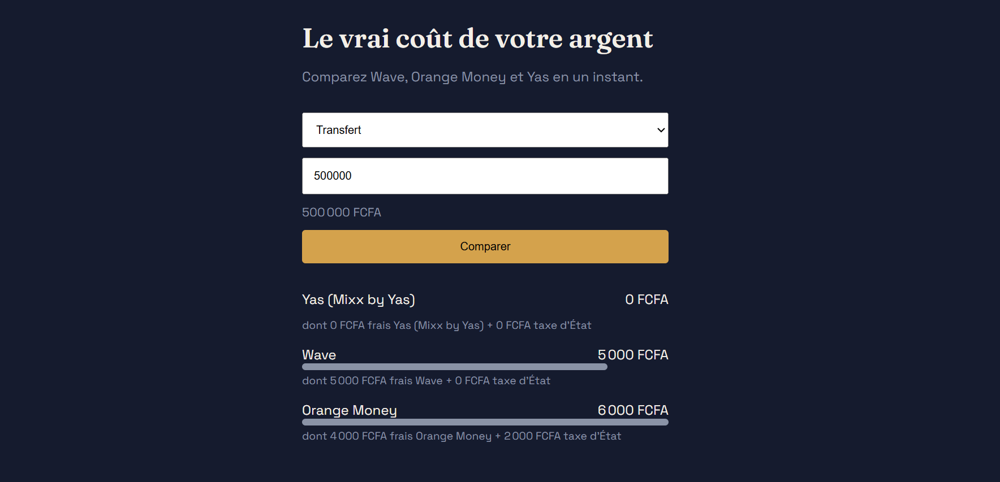
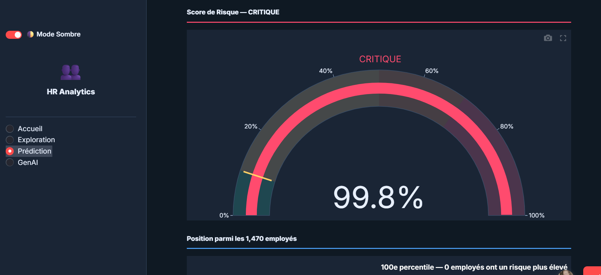

14.6928° N · 17.4467° O — DAKAR, SÉNÉGAL
Data Analyst. Je conçois des outils d'analyse déployés de la base de données à l'API en production pour des problèmes concrets en Afrique de l'Ouest : comparaison de coûts financiers, prédiction RH.
Je construis des outils d'analyse déployés de bout en bout — de la conception de la base de données jusqu'à une API en production. Mon approche : comprendre le contexte local en profondeur (mobile money, données RH), puis livrer des outils qui fonctionnent vraiment en production, pas seulement une maquette ou un dashboard statique.
Diplômée en Informatique de Gestion à l'UCAO (Dakar), je me suis orientée vers l'analyse de données parce que j'aime comprendre un problème réel avant de le modéliser pas l'inverse. Je construis des outils pensés pour le contexte ouest-africain (mobile money, données RH locales), avec une exigence : chaque donnée doit être vérifiable, chaque projet doit être déployé, pas seulement démontré.

Comparateur de frais en temps réel entre Wave, Orange Money et Yas (retrait, transfert, dépôt), taxe d'État incluse dans le calcul. Données collectées et vérifiées en conditions réelles chaque tarif est sourcé et daté, pas simulé.

Mémoire de fin d'études : prédiction du turnover employé avec explicabilité complète. Un modèle XGBoost couplé à SHAP pour expliquer chaque prédiction, et des recommandations RH générées par IA.